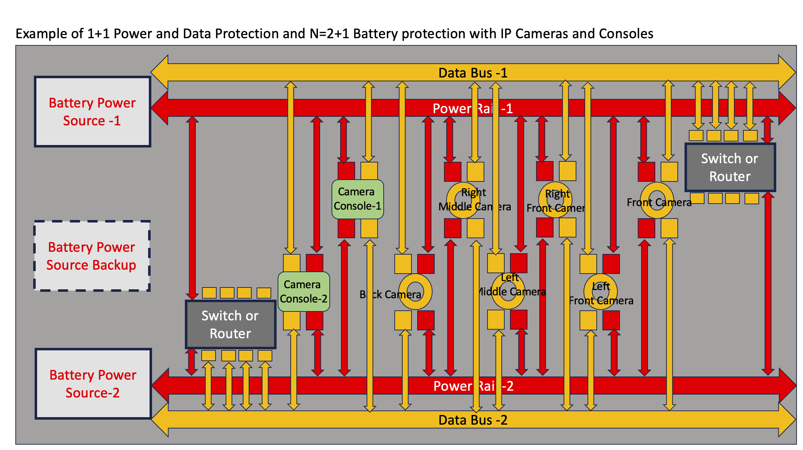
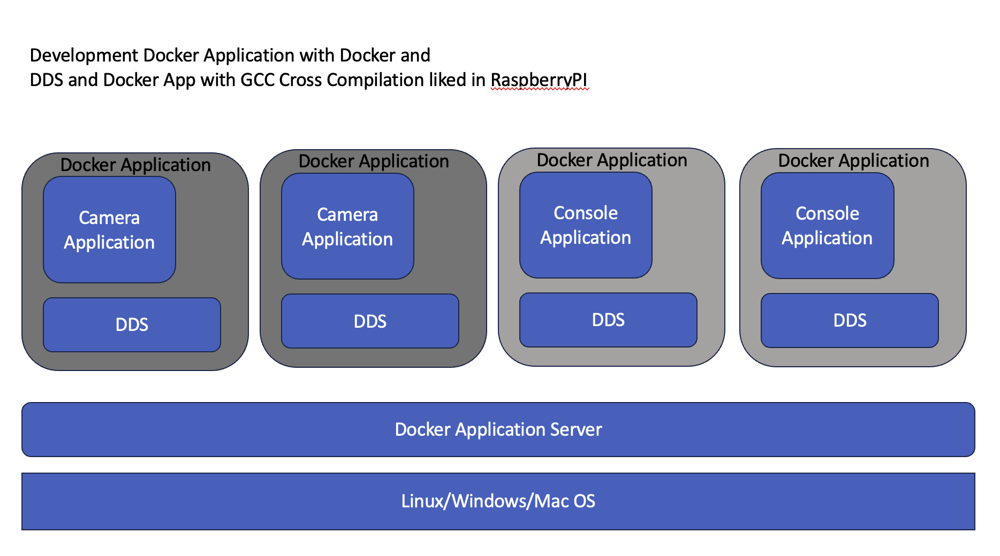
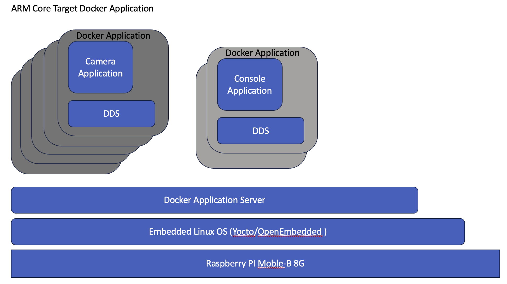

Land System
August 11, 2023
Disclaimer: The User Requirements Specification documentation is broken down into two parts to remove the unambiguous in the Requirements and the Specification:
- User-requirements means the user document the requirements without any implementation intention, e.g. the user document to build a house with four windows and a door.
- User-specification means the user document the requirements to be implemented with specification, e.g the user document to build a house for human to live with a door specified by the manufacture and four windows specified by the manufacture. Specification imposes the implementation constraints. Here is a possible system design solution with the following user-specifications and assumptions to be validated and invalidated:
- Architecture is based on the TCP/UDP with IP architecture  Here is a possible system design solution with the following assumptions to be validated and invalidated:
- Architecture is based on the Data Distributed System (DDS). Please note that I still use the word Architecture here as DDS as it is the standard and solution widely used in the defence system development. “A Distributed Data System (DDS) is a system that allows data to be exchanged among different applications or devices in a network using a publish-subscribe pattern. DDS has a standard protocol and API defined by the Object Management Group (OMG), which specifies the communication semantics and quality of service for data-centric connectivity¹³. DDS also follows the standards for data management and interchange set by the ISO/IEC JTC 1/SC 32, which aim to promote harmonization of data facilities across different domains”. RTI, Vortex and eProsima are three vendors that offer implementations of the DDS standard. RTI and Vortex are commercial vendors, while eProsima offers both commercial and open source solutions. eProsima Fast DDS (formerly known as Fast RTPS) is an open source implementation of the OMG DDS that claims to be faster and easier to use than other implementations¹. However, there may be some compatibility issues between eProsima Fast DDS and RTI Connext DDS, as they use different versions of the DDSI-RTPS protocol²³. eProsima also develops other products such as eProsima RPC for DDS, which is a remote procedure call framework based on DDS⁴. (1) DDS - eProsima. https://eprosima.com/index.php/resources-all/whitepapers/dds. (2) RTI pub/subs are not able to communicate with eProsima FastDDS pub/subs. https://community.rti.com/forum-topic/rti-pubsubs-are-not-able-communicate-eprosima-fastdds-pubsubs. (3) Compilibility of eProsima FastDDS and RTI Context DDS [10768 … - GitHub. https://github.com/eProsima/Fast-DDS/issues/1809. (4) eProsima | Data Distribution Service (DDS) Community RTI Connext Users. https://community.rti.com/partners/eprosima. Source: Conversation with Bing, 11/08/2023 (1) Data Distribution Service - Wikipedia. https://en.wikipedia.org/wiki/Data_Distribution_Service. (2) What is DDS?. https://www.dds-foundation.org/what-is-dds-3/. (3) About the Data Distribution Service Specification Version 1.4. https://www.omg.org/spec/DDS/1.4/About-DDS/. (4) ISO/IEC JTC 1/SC 32 - Data management and interchange. https://www.iso.org/committee/45342.html. I have developed a Proof Of Concept to research into the embedded software development with Yocto with running Vortex DDS @ ADLINK Tech.
- Special thank and acknowledge the assistance to the Sale Engineer and Technical Support at ADLINK.
- I could not acquire the RTI DDS software @ RTI and eProsima DDS to test out the concept. In general, I would like to test out:
- Yocto/Openembedded OS image with the running Docker tested on the RaspberryPI and Intel Development Board (I did test out initially but unfortunately had to abandon as runing out of time)
- OS image running on read only file system to test out the concept where the system will never be bricked.
- Docker running the Application to support IP Camera and IP Console - the Docker application software can be developed with the Cross Compilation and continuously develop and integrate with many releases.
The objective of the Docker allow me to test out the docker storm to ensure the two processes to be implemented to the IP Camera or Console, thus allowing High Availability to be implemented to the firmware.  The objective of OS that never-bricked the system as it runs on the read-only file system thus allowing the upgrade of the docker application.
And finally all the OS and Docker software packages are still maintained in two banks of memory to support the traditional firmware development, thus we upgrade both OS and application if required.
I apply the Data-Centre Operation Administration and Maintenance (OAM) on the OS upgrade and Application upgrade to the Firmware OAM. 